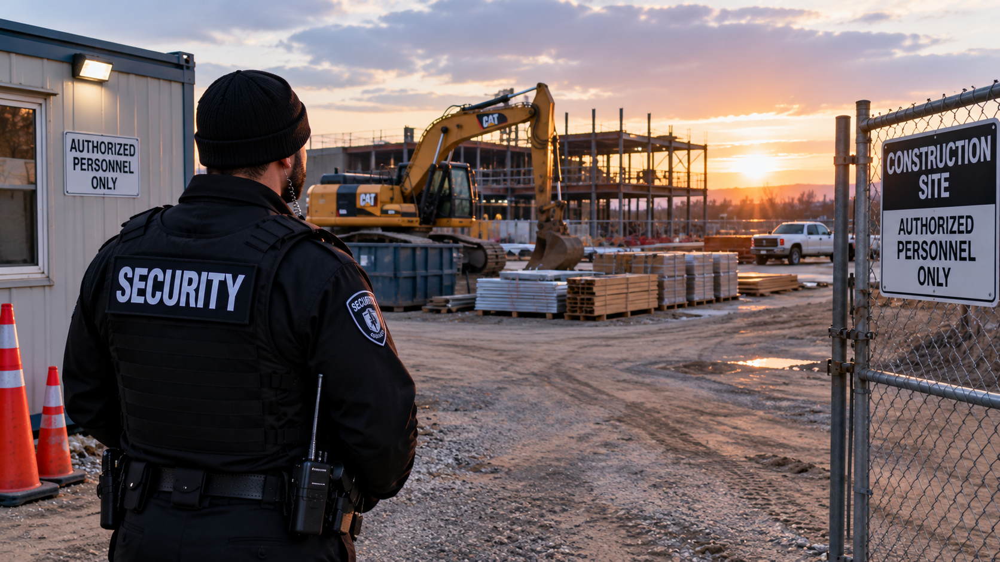

Construction
The Hidden Cost of Construction Site Theft During Holiday Shutdowns

A quiet construction site still carries obligations
When a construction crew leaves for a holiday, the project does not stop existing. Equipment remains valuable, subcontractors retain commitments, and owners still expect work to resume. A break in the schedule can give workers needed rest, but it also means the site may spend longer periods without its usual activity. Theft or unauthorized entry during that time can create consequences far beyond the immediate loss.
The National Equipment Register has issued holiday advisories describing recurring reports of equipment theft affecting jobsites, rental businesses, and dealers. The advisories establish a real industry concern, not a promise that every holiday closure will be targeted. For contractors, that distinction matters. The case for security should rest on the value of continuity rather than exaggerated predictions.
The price of a missing machine is only the beginning
Imagine returning from a holiday closure to discover that a machine essential to the next phase of work is gone. The obvious loss is its replacement value. But the construction schedule may depend on that machine. Crews could be waiting for a task they cannot complete, subcontractors may need new dates, and the project manager must devote time to reports, equipment arrangements, and customer communication.
Insurance may address some losses depending on policy terms and deductibles, but it cannot be assumed to reimburse every interruption. A delay may be minor on one project and significant on another. Contractual terms, replacement availability, and the stage of construction determine the actual effect. Assigning a universal percentage to the cost of theft would conceal those differences.
Why smaller builders can be especially exposed
A large contractor may have alternative equipment and more administrative resources. A smaller builder may depend on one specialized machine or a limited set of tools. When something goes missing, there may be no easy substitute. A relatively modest theft can therefore affect the ability to meet a promised schedule or keep workers productively assigned.
Residential renovations, small commercial builds, and larger developments have different exposures, but each relies on continuity. The financial consequences include time, customer relationships, and the uncertainty of reorganizing work. Those losses are not always visible in a police report or an equipment valuation.
Security and construction safety are related but different
Construction is a high hazard industry, as the Occupational Safety and Health Administration explains in its guidance. Employers have responsibilities involving worker safety and hazard management. Theft prevention is a separate concern, even though a well managed property should consider both. A private security officer does not replace a contractor's safety program, qualified supervisors, or compliance obligations.
Professional security can provide an authorized presence and a means of reporting concerns during a planned absence. The right arrangement depends on the site and its actual needs. Public articles need not reveal specific patrol schedules, access vulnerabilities, or detailed operational tactics to explain the business value of professional oversight.
The value of returning ready to work
The best holiday shutdown is uneventful. Workers return, equipment is accounted for, and the project resumes without a surprise that consumes the first week back. No security provider can guarantee that a loss will never happen. Still, the ability to manage an inactive site responsibly matters to contractors, owners, and the people whose schedules depend on the work.
Construction is built on commitments. The true cost of theft is often measured not only in what disappears, but in the momentum and trust that must be restored afterward. Protecting that continuity is the reason holiday security deserves serious consideration.